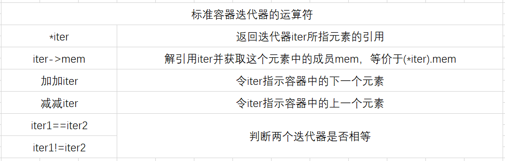

迭代器(iterator)是另外一种用来实现同样目的更通用的机制。除了vector之外，标准苦海定义了其他几种容器，所有标准库容器都可以使用迭代器。但是只有其中少数几种可以使用下标运算符。严格来说，string对象不属于容器类型。但是string支持很多与容器类型相似的操作。string也支持迭代器。和指针不一样的是，获取迭代器不是使用取地址符，有迭代器的类型同时拥有返回迭代器的成员。这些类型都含有名为begin和end的成员。其中begin成员负责返回第一个元素或字符的迭代器。如有下述语句：
//由编译器决定b和e的类型；
//b表示v的第一个元素，e表示v尾元素的笑一个位置
auto b=vv.begin(),e=v.end();//b和e的类型相同
end成员则负责返回指向容器(或string对象)的“尾元素的下一个位置(one past the end)”的迭代器，也就是说，该迭代器指示的是容器的一个本不存在的“尾后(off the end)”元素。这样的迭代器没什么实际含义，仅仅是个标记而已，表示我们已经处理完了容器中的所有元素，end成员返回的迭代器常常被称作，尾后迭代器(off-the-end iterator)或者尾迭代器(end iterator)。特殊情况下如果容器唯恐，则begin和end返回的是同一个迭代器。
如果容器为空，则begin和end返回的是同一个迭代器，都是尾后迭代器
一般来说，我们不清楚迭代器准确的类型到底是什么。
表中列举了迭代器支持的一些运算。使用==和！=比较两个合法的迭代器是否相等，如果这两个迭代器指向的元素相同或者是同一个容器的尾后迭代器，则他们相等；否则不相等。

和指针类似，也能通过解引迭代器来获取它所指示的元素。执行解引用的迭代器必须合法并确实指示着某个元素。试图解引用一个非法迭代器或尾后迭代器都是未被定义的行为。
之前例子中的程序利用下标将string中第一个字母改成了大写，利用迭代器也能实现这样的功能。
string a("some string");
if(a.begin()!=s.end())//确保s非空
{
auto it=a.begin();//it表示a第一个字符
*it=toupper(*it);//将当前字符转成大写
}
输出讲过依然是：Some string
迭代器使用递增运算符或递减运算符来从一个元素移到下一个或是上一个元素。
因为end返回的指示器并不实际指向某一个元素，所以不能对他进行递增或解引用的操作。
之前例子将string对象中第一个单词改成大写。现在运用迭代器及其递增操作实现相同的功能
//依次处理s的字符直至我们处理完全部字符或者遇到空白
for(auto it=s.begin();it!=s.end&&!isspace(*it);++it)
{
*it=toupper(*it);//将当前字符改成大写形式
}
关键概念：泛型编程：c++程序员习惯性的使用！=而不是<，其原因和他们更愿意使用迭代器而非下标的原因一样：因为这种变成风格在标准库提供的所有容器上都有效。之前已经说过，只有string和vector等一些标准库类型由有下标，与之类似，所有标准库容器的迭代器都定义了==和！=，但是他们大多数都没有定义<运算符。因此只要我们养成使用迭代器和！=的习惯，就不用了太在意用的到底是哪种容器类型。
那些拥有迭代器的标准库类型使用iterator和const_iterator来表示迭代器的类型(类似于我们不知道string和vector的size_type成员到底是什么类型一样):
vector<int>::iterator it;;//it能读写vector<int>的元素。
string::iterator it2;//it也能读写string对象中的元素
vector<int>const_iterator it3;//it3只能读元素，不能写元素
string::const_iterator it4;//it4只能读字符，不能写字符
const_iterator和常量指针差不多，能读取但是不能修改它所指的元素的值。
术语：迭代器和迭代器类型：迭代器这个名字有三种不同的含义：可能是迭代器概念本身，也可能是指容器定义的迭代器类型，还可能是某个迭代器对象。重点是理解存在一组概念上相关的类型，我们认定某个类型是迭代器当且仅当它支持一套操作，这套操作使得我们能访问容器的元素或者从某个元素移动到另外一个元素。每个容器定义了一个名为iterator的类型，该类型支持迭代器概念所规定的一套操作。
begin和end运算符返回的具体类型由对象是否市场量决定，如果对象是常量，begin和end返回const_iterator;如果对象不是常量，返回iterator:
vector<int> v;
const vector<int> cv;
auto it1=v.begin();//it1的类型是vector<int>::literator
auto it2=cv.begin();//it2的类型是vector<int>::const_literator
有时候这种默认的行为并非我们所要，为了便于专门得到const_iterator,c++11新标准引入了两个新函数，分别是cbegin和cend：
auto it3=v.cbegin();//it3的类型是vector<int>::const_iterator
类似于begin和end，上述两个新函数也分别返回指示器第一个元素或者最后一个元素下一位置的迭代器有所不同的是不管vector对象本身是不是常量，返回值都是const_iterator。
解引用迭代器可能获得迭代器所指的对象，但如果该对象是类，那么可能要进一步访问他的成员。例如对一个由字符串组成的vector对象来说，要想检查其元素是否为空，令it是该vector对象的迭代器，只需检查it所指字符串是否为空就可以了，其代码如下所示：
(*it).empty()
(*it).empty中的圆括号必不可少，该表达式的含义是先对it解引用，然后解引用的结果再执行点运算符，：
(*it).empty();//解引用it，然后调用结果对象的empty成员
*it.empty();//错误：试图访问it的名为empty的成员，但it是个迭代器，没有empty成员
为了简化上述表达式，c++语言定义了箭头运算符(->)箭头运算符把解引用和成员访问两个操作结合在一起，也就是说，it->mem和(*it).mem表达的意思相同。
例如，假设用一个名字为text的字符串vector存放文本文件中的数据，其中的元素或者一句话或者是一个用于表示段落分割的空字符串，如果要输出text中第一段的内容，可以利用迭代器写一个循环令其遍历text，，直到遇到空字符串中的元素为止：
//依次输出text中的每一行直到遇到空白行为止
for(auto it=text.cbegin();it!=text.cend()&&!it->empty();++it)
{
cout<<*it<<endl;
}
虽然vector独爱性可以动态地增长，但是也会有一些副作用，一致的一个限制是不能在范围for循环中向vector对象添加元素。另外一个限制是任何一种可能改变vector兑现高容量的操作，正如push_back，都会使该vector对象的迭代器失效。
谨记，但凡是使用了迭代器的循环体，都不要向迭代器所属的容器添加元素。
迭代器运算(iterator arithmetic)。可以令迭代器和一个整数值相加(或相减)，其返回值是向前（或向后）移动了若干个位置的迭代器，执行这样的操作室，结果迭代器或者指示原vector对象（或string对象）内的一个元素，或者指示原vector对象（或string对象）尾元素的下一个位置。
举个例子，下面的代码得到一个迭代器，他指向某vector对象中间位置的元素：
//计算得到最接近vi中间元素的一个迭代器
auto mid=vi.begin()+vi.begin()/2;
如果vi有20个元素，则mid得到vi.begin()+10;
假设it和mid是同一个vector对象的两个迭代器，可以使用下面的代码来比较他们的位置谁前谁后：
if(it<mid)//处理vi前半部分的元素
{
;
}
只要两个迭代器指向的是同一个容器的元素或者尾元素的下一位置，就能将其相减，所得到的是两个迭代器的距离，其类型名为difference_type的带符号整型数。因为这个距离可正可负。
使用迭代器运算的一个经典算法是二分搜索。二分搜索是从有序序列中寻找某个给定的值。二分搜索从序列中间的位置开始搜索，如果中间的元素正好是要找的元素，那么搜索完成，如果不是，加入该元素小于要查找的元素，则在序列的后半部分继续搜索，；否则在前半部分搜索，下面的程序使用二分搜索完成了二分搜索：
//text必须是有序的
//beg和end表示我们搜索的范围
auto beg=text.begin(),end=text.end();
auto mid=text.begin()+(end-beg)/2;//初始状态下的中间点
//当还有元素尚未检查并且我们还未找到sought是执行循环
while(mid!=end&&*mid!=text.end)
(
if(sought<*mid)//我们要找的元素是否在前半部分
{
end=mid;//如果是，调整搜索范围，忽略掉后半部分
}
else
{
beg=mid+1;//在mid之后寻找
}
mid=beg+(end-beg)/2;//新的中间点
)
循环部分先检查搜索范围是否为空，如果mid和end当前值相等，说明已经找遍了所有元素。此时条件不满足，循环终止。当搜索范围不为空时，可知mid指向了某个元素，检查钙元素是否是我们想要搜索的，如果是，终止循环。
循环过程终止时，mid或者等于end或者指向我们要找的元素。如果mid指向end，说明text中没有我们要找的元素。